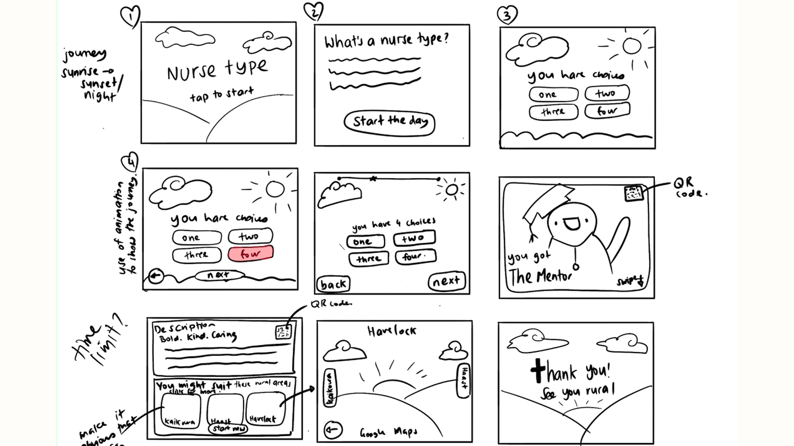
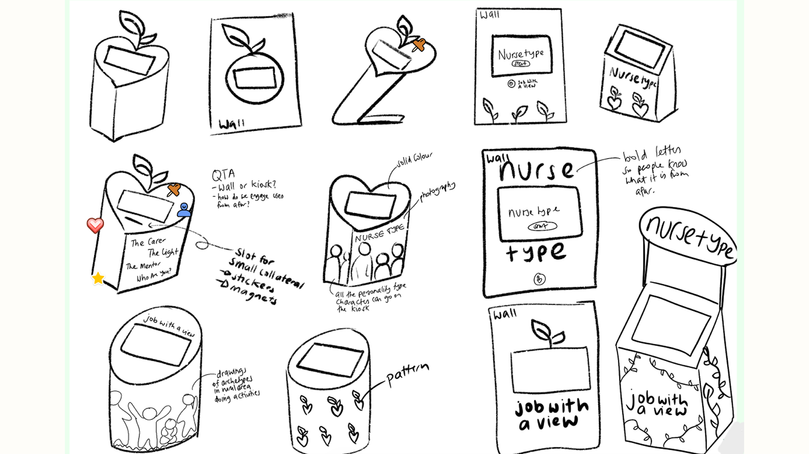
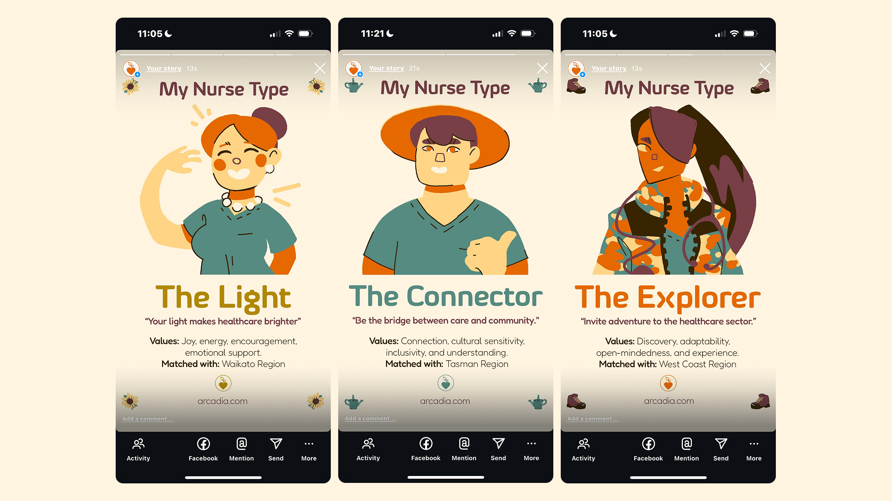
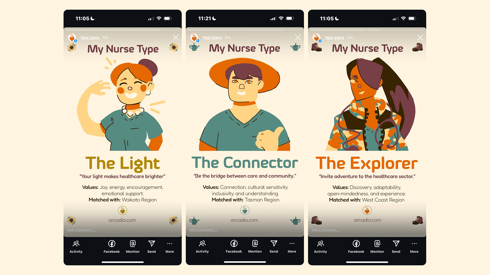

Arcadia
2025
Arcadia Final PresentationTOOLS
Figma | Photoshop
TEAM
Jefritz Espino - Project Manager | UX/UI Designer | Graphic Designer
Alisa Volkova - UX/UI Designer | Lead Researcher
Hazel Rose Jordan - Graphic Designer | Illustrator
Jennifer Bampton - Motion Designer
SKILLS
Graphic Design | UX/UI | Experience Design | Project Management | Social Media
BRIEF
New Zealand has a shortage of registered nurses in the rural healthcare sector, making primary healthcare inaccessible to rural residents. Additionally, challenges and stigmas surrounding rural healthcare work can discourage people from entering this workforce.
SOLUTION
Our solution, Arcadia, is a multimedia nurse recruitment campaign designed to uplift rural healthcare and inspire nurses to work rurally.
CONTRIBUTION
In my role as a project manager, I was in charge of managing the team and project's progress through daily standups and project management tools. As the Graphic designer, I was in charge of designing and creating the collaterals such as lanyards, posters, branding and social media posts. Alongside this, my role as a UX/UI designer, I was responsible for designing the interactive experience and investigating the UX processes for the website and interactive experience.


POSTERS
Our posters displayed scenes of a rural nurse enjoying the rural lifestyle; they were created to inspire and immerse our nurses in the rural area. These will be placed in hospital break rooms and nurse conferences, as these are the areas where our nurses are more likely to feel relaxed and least stressed, therefore, they can associate these feelings with the posters.

INTERACTIVE EXPERIENCE
To further expose our nurses to rural areas, we created a personality quiz kiosk that will be placed in nurse conferences. Through some feedback, we found that adding a Be in to Win opportunity, Google 360 view of the rural area rather than a photo of it and a description of what Arcadia is all about, would highly increase the engagement and interest in the message of what Arcadia's goal is.
`  
MEMORABILITY
To create a memorable experience for the nurses, we have created social media posts and lanyards to provide a souvenir for our nurses to take home as well as increase the shareability of the experience.
 
